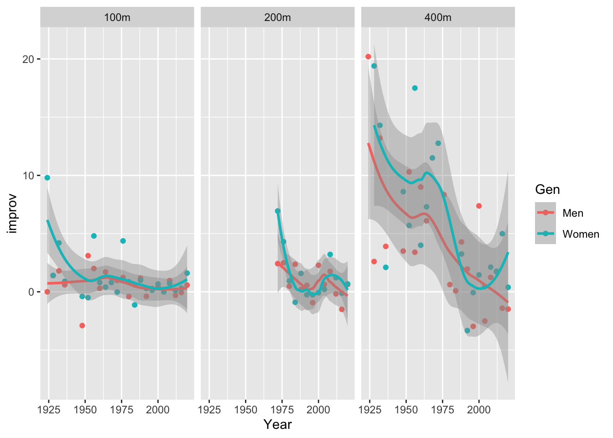

Olympic Swimming History 1912-2020
In light of the upcoming 2024 Paris Olympics, let us dive into some trends surrounding Olympic Swimming
The first modern Olympic Games were held in Athens in 1896. The first Olympics introduced some interesting races into the lineup, such us the 100m free for sailors which was strictly for members of the Greek Navy and all of the races were held in open water.
Until 1912, only male swimmers were allowed to compete in the Olympics. Women only began to compete at the Stockholm Olympics when they were finally allowed in water. In that year, they could only compete in the 100 free and 400 free relay.
Which Countries Have Been Most Dominant?
Lets take a brief overview of countries which have been most successful in Olympic Swimming
At the 2020 Tokyo Olympics, the United States of America took home 30 medals in swimming, adding to the incredible haul of medals that it has been accumulating since the start of the Olympic Games. In comparison, Australia and Japan which are ranked second and third in the overall medal count only bagged 21 and 3 medals respectively. Additionally, 25% of total medals won by the USA in the games that year came from swimming alone.
Swimming Results Over Time
How have Olympic swimming results changed over time?
Olympic swimming performances have made significant improvements since 1912. The reasons for improvement are due in part to advanced training procedures, increasingly sophisticated selection methods, superior stroke mechanics, increased access to the sport or even new swimwear technologies. Most importantly, this is possible due to the International Swimming Federation’s openness in developing competition rules such as exploring new swimming techniques, swimmer’s gear and swimwear as well as swimming pool equipment while ensuring that the final performance is determined by human skills and quality of training rather than technology.
Improvement How?
Lets dive deeper into these improvements!
Evidently, women have achieved a higher absolute improvement in swimming timings compared to men. This can be attributed to the lesser time that women have spent in the competitive swimming scene.
Owing to a greater rate of improvement in female swimmers, we can observe a diminishing difference between the results of female and male athletes. Take for example tht 100m Freestyle event, the 1952 difference between male and female gold medalists was 19.40 s and had dropped to 4.094 s by 2020
Is Swimming Performance Reaching its Peak
What are the limits of atheletic performance?

Despite female athletes improving at a faster rate than their male counterparts, both demographics are experiencing improvements at decreasing rates. Given years of rapid development that has occurred since 1912 within the spheres of human physiology, economics, global environment and more, performance in humans and animals have experiences a plateau in the last 20-30 years. Fortunately, technological innovations may alleviate the effects of such stagnation, depending on the evolution of rules and regulations. (Berthelot et al.,2015)
Overall, we can also observe an increasing difference in swimming results between women and men as the race distance grows longer.
The reason for this can be sought in physiological and morphological features. This phenomenon is also mirrored in track events where, the smallest margin of differences occurs between men and women in the marathon, while the greatest percentile differences occur in the long sprints which depend on anaerobic glycolysis
It thus seems that women have well developed aerobic metabolism, similar to men. However, sprints both in track and fields and in swimming require the development of muscular strength and power which favours men because of the higher content of muscle tissue and better developed anaerobic metabolism. However, a higher fat content in female athletes may increase buoyancy, which can be considered a benefit in distance swimming. Owing to increased buoyancy and energy reserves from higher body fat content, women may soon approach the performance of men.
References
Stanula A, Maszczyk A, Roczniok R, Pietraszewski P, Ostrowski A, Zając A, Strzała M. The development and prediction of athletic performance in freestyle swimming. J Hum Kinet. 2012 May;32:97-107. doi: 10.2478/v10078-012-0027-3. Epub 2012 May 30. PMID: 23486223; PMCID: PMC3590874.